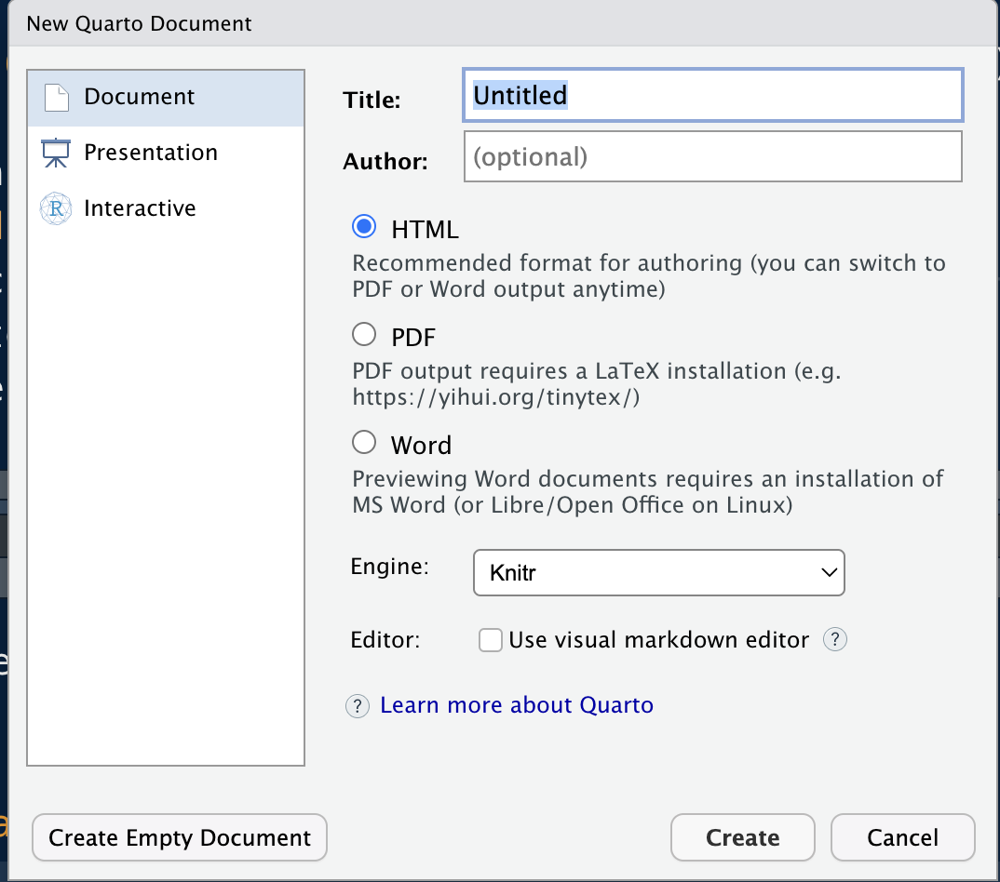
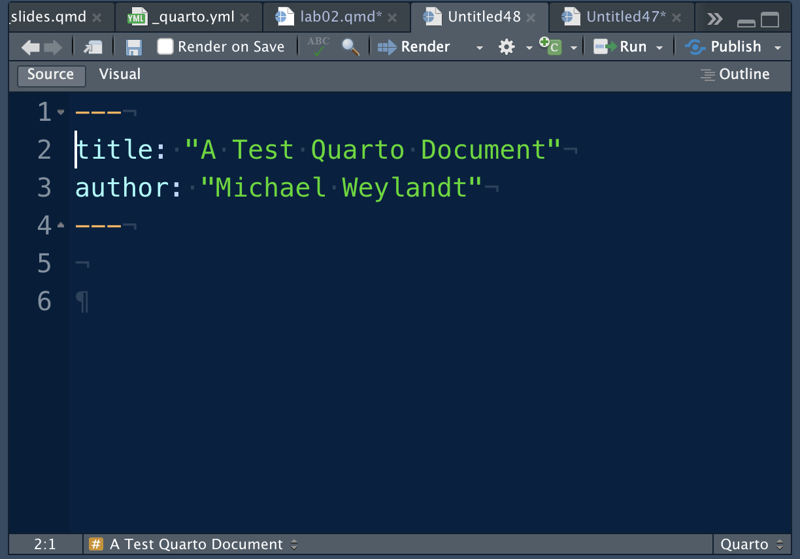

editor:
mode: sourceSTA 9750 Lecture #2 In-Class Activity: Getting Down with Markdown
Class #02: Thursday February 05, 2026 (Lecture #02: Tools for Reproducible Research)
Slides
Welcome!
In this week’s in-class activities, we are going to practice the use of the quarto rendering engine.
Quarto
Lab Activity: Part 0
If you haven’t already, install Quarto.
Once Quarto is installed, you can check that it is running properly by generating a new qmd document and confirming that it renders properly. To generate a qmd document, click the New File button (white page with a green + symbol) in the top right corner of RStudio and select “Quarto Document”. This will generate a wizard like this:

Type your name and a title and hit “Create”. (You can use the default HTML document type for now.) This will open a new qmd document in RStudio that looks like:

Make Sure you are in Source Mode
When you generate your qmd document, make sure that you are using the Source editor mode. Near the top right corner of your file, there will be two buttons that say Source and Visual. You want to make sure Source is selected; Visual mode is dangerous and a bit counterproductive.
Last week, you should have set RStudio to default to Source mode, but if you are still getting documents created in Visual mode, try the following:
- Tools > Global Options > R Markdown > Visual > Uncheck “Use visual editor by default”
Additionally, once you create your STA9750-2026-SPRING project in Mini-Project #00, add the line
to your _quarto.yml file.
Note that RStudio knows this is a Quarto document and is providing helpful buttons (and the never-to-be-touched Visual button). To confirm RStudio knows this is a Quarto document, note that small Quarto in the bottom right corner. Other file types, e.g., R scripts, will have different messages there.
To render this document, simply hit the Render button on the top bar next to the blue arrow. After you save your file, this should create a (very basic) web page and open it automatically in your browser. Add some content to the bottom of the file and re-Render to see how the page is updated.
The area of the qmd document at the top between the --- bars is the document header. This isn’t rendered in the document per se, but is used to set important settings. By default, qmd documents are rendered to HTML, but we can change this by adjusting the document header.
If you add the line
format: docx
to the header on its own line between the --- bars and hit Render, Quarto will produce a Word document instead of a web page (HTML). In the next sections, you will explore another type of document - web-based presentation slides generated using the revealjs library.
Lab Activity: Part 1
Create a 5 slide presentation showing the Houston housing market. When starting your document with the Quarto Document wizard, select “Presentation” in the rightmost column and then use the default (revealjs) format. Your presentation should include:
- A title slide
- Three body slides, each containing a figure and some text
- A conclusion slide
Before attempting to make your slides, run the following two commands at the R console:
if(!require("tidyverse")) install.packages("tidyverse")
if(!require("quarto")) install.packages("quarto")These will make sure all necessary packages are installed.
Recall that in Quarto, sections are separated by # (level one) and ## (level two) headers. When generating slides, level one headers are used for “section header” slides (essentially mini-title slides) while level two headers are used to separate individual slides.
You may use the following code snippets to generate relevant figures. Recall that this code needs to be between three back-ticks (the ` symbol typically found above the tab key) on each end and start with {r} curly braces as well. A code block should look something like:
```{r}
CODE GOES HERE
```You should read about Quarto output options to make sure the figure is displayed while hiding the code in your slides.
Snippet 1:
Snippet 2:
if(!require("tidyverse")) install.packages("tidyverse")
library(tidyverse)
txhousing |>
filter(city=="Houston") |>
group_by(month) |>
summarize(avg_price=sum(volume) / sum(sales)) |>
mutate(month=factor(month.abb[month],
levels=month.abb, ordered=TRUE)) |>
ggplot(aes(x=month, y=avg_price)) +
geom_bar(stat="identity") +
ggtitle("Average Price of Houses Sold in Texas by Month") +
xlab("Month") +
ylab("Average Sale Price") +
scale_y_continuous(labels = scales::dollar)Snippet 3:
if(!require("tidyverse")) install.packages("tidyverse")
library(tidyverse)
txhousing |> filter(year==2015) |>
group_by(city) |>
summarize(avg_price=sum(volume) / sum(sales),
num_sales=sum(sales)) |>
slice_max(num_sales, n=10) |>
ggplot(aes(x=city, y=avg_price)) +
geom_bar(stat="identity") +
ggtitle("Average Price of Houses Sold in 2015 by City in Texas") +
xlab("City") +
ylab("Average Sale Price") +
scale_y_continuous(labels = scales::dollar)Include these snippets in your slides to see what they produce. Then add some appropriate text and re-render your document.
Lab Activity: Part 2
Review the Quarto Demo Slides and add one new element to your slides from the previous section.
Lab Activity: Part 3 (Optional)
Create a simple PDF quarto document using the RStudio wizard.
LaTeX Required for PDF Generation
Quarto (and pandoc) rely on software called LaTeX to generate PDFs. If you do not have pdflatex installed, you will not be able to generate a PDF automatically. In theory, Quarto will handle this for you automatically, but if you are having trouble generating PDFs, run the following command at your R console:
if(!require("tinytex")) install.packages("tinytex"); tinytex::install_tinytex()We will not generate PDF documents in this course, so don’t worry if you can’t get it working in class. This is just intended to demonstrate the ability of Quarto to render to non-HTML outputs.
Learning More
The official Quarto documentation provides three helpful tutorials:
These provide additional detail on using Quarto.